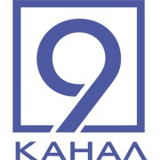
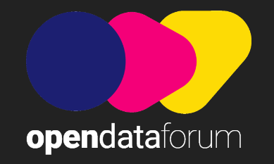
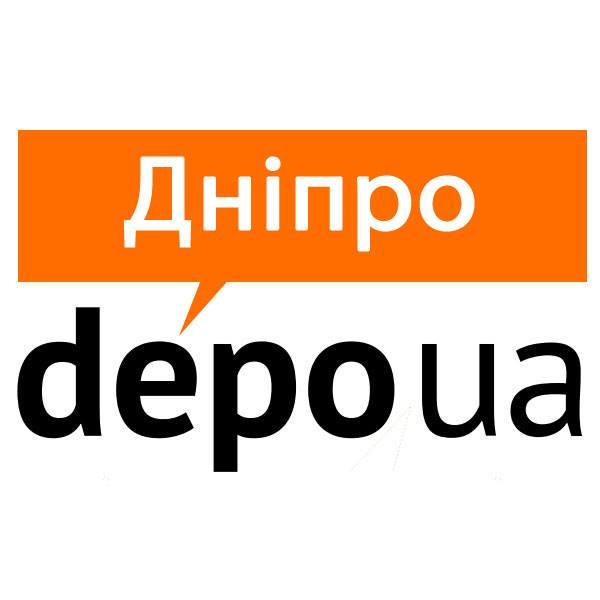
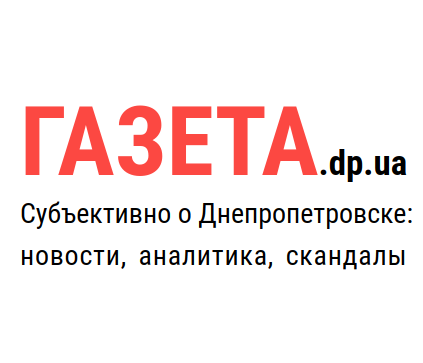

ЗМІ про нас
✻
- На Innovating Justice Boostcamp Kyiv назвали лучшие legal-tech-стартапы Украины (2017.10.23)
- Чи дорівнюватиме legal tech доступу до правосуддя? (2017.10.20)
- 
- Проект "Суд на долоні" буде втілений у Дніпрі (2017.10.18)

- Названы лучшие legal-tech-стартапы Украины (2017.10.20)

- Как проект «Суд на ладони» поможет понимать судебные решения каждому? (2017.10.09)
- Дешевых юристов уже не будет (2017.10.05)
- 
- Переможець Open Data Challenge Кирило Захаров про «Суд на долоні» та бажання «відкрити Дніпро» (2017.09.29)

- Підсумки Open Data Forum: є трійка переможців Open Data Challenge (2017.09.27)
- «Суд на долоні» став переможцем найбільшого IT-конкурсу стартапів (2017.09.25)
- Дніпровський проект «Суд на долоні» став переможцем найбільшого IT-конкурсу стартапів на основі відкритих даних (2017.09.23)
- 
- Автори дніпровського стартапу з відкритих даних виграли на розвиток півмільйона гривень (2017.09.22)

- Ukraine Open Data Challenge: finalists revealed (2017.08.11)
- Нішева ніша: організатори Open Data Challenge — про роботу з відкритими даними (2017.07.27)
- Як стартап «Суд на долоні» додасть прозорості українському судчинству (2017.07.25)
- Две команды из Днепра прошли в финал IT-конкурса национального масштаба (2017.07.13)
- Дніпровська команда — у фіналі національного ІТ-конкурсу «Open Data Challenge» (2017.07.11)
- Оголошено фіналістів конкурсу стартапів Open Data Challenge (2017.07.11)
- 
- В Днепре утверждают, что суд может быть… на ладони (2017.07.11)